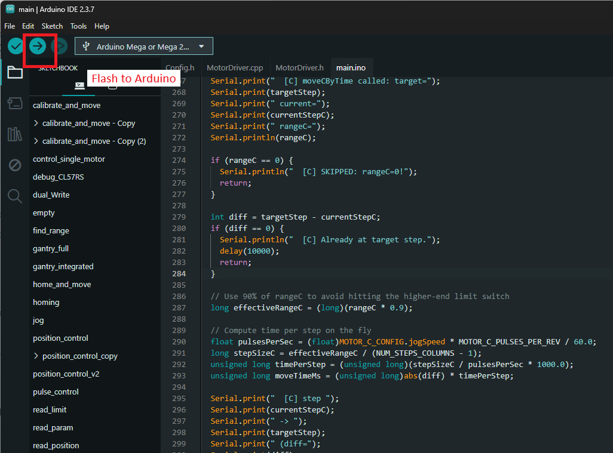

Code Files and API
This section provides a detailed overview of the source code files and the API used in the Multi-Axis Gantry System.
Source Files
| File |
Description |
| Config.h |
Hardware pins, bus settings, motor configurations |
| MotorDriver.h |
Motor driver class declaration |
| MotorDriver.cpp |
Motor driver class implementation |
| main.ino |
Main sketch — command dispatch, calibration, motion |
Flash the main.ino file to the arduino using the arduino IDE.

Motor Configuration (Config.h)
| Parameter |
Motor A |
Motor B |
Motor C |
Description |
slaveId |
1 |
2 |
3 |
Modbus slave address |
travelSpeed |
60 |
60 |
170 |
Position move speed (RPM) |
jogSpeed |
60 |
60 |
170 |
Velocity jog speed (RPM) |
jogDirection |
+1 |
−1 |
−1 |
Calibration jog sign |
accel / decel |
200 |
200 |
200 |
Acceleration / deceleration |
eepromAddr |
0 |
4 |
8 |
EEPROM calibration storage address |
posLimitBit |
6 |
6 |
6 |
POS_LIM bit in 0x602E |
negLimitBit |
5 |
5 |
5 |
NEG_LIM bit in 0x602E |
homesToPosLimit |
false |
true |
true |
Which limit is the home switch |
posRegAddr |
0x1014 |
0x1014 |
0x1012 |
Position register source |
System Parameters
| Parameter |
Default |
Description |
ACTIVE_MOTORS |
MOTORS_ABC |
Active motor set |
NUM_STEPS_ROWS |
2 |
Vertical (A/B) grid divisions |
NUM_STEPS_COLUMNS |
6 |
Horizontal (C) grid divisions |
MOTOR_C_BUFFER |
5000 |
Safety margin from C limit switches (pulses) |
MOTOR_C_PULSES_PER_REV |
10000 |
Motor C encoder resolution |
LED_ON_DURATION_MS |
1000 |
LED blink duration after reaching position |
MotorDriver API
The MotorDriver class provides a comprehensive interface for controlling the Leadshine motor drivers via Modbus RTU. The API is categorized by functionality below.
Initialization
| Method |
Description |
void begin(...) |
Initializes Modbus communication with specified preTransmit and postTransmit callbacks. |
void enable() |
Enables the servo drive to allow motion. |
void clearFault() |
Clears any active faults or alarms on the drive. |
void clearCommandRegister() |
Sends a clear command to reset the command register (0x6002). |
Status & Reading
| Method |
Description |
long readPosition() |
Reads the current 32-bit position from the motor's encoder. |
uint16_t readDigitalInputs() |
Fetches the raw bit-packed digital input status. |
bool isPosLimitHit() |
Checks if the positive limit switch is triggered. |
bool isNegLimitHit() |
Checks if the negative limit switch is triggered. |
bool isHomeLimitHit() |
Evaluates if the configured home limit switch is engaged. |
bool isFarLimitHit() |
Evaluates if the configured far limit switch is engaged. |
bool isMotionComplete() |
Returns true if the current path/motion has finished. |
bool isDriveFaulted() |
Returns true if the drive is in a fault state. |
bool isHomingComplete() |
Returns true if the homing routine successfully concluded. |
Calibration (Blocking)
| Method |
Description |
bool doHoming() |
Starts and blocks until the homing routine reaches the home switch. |
bool verifyHomeLimit() |
Verifies that the hardware home limit switch is correctly engaged. |
void setZeroPosition() |
Zeroes out the encoder and position counter. |
long findFarLimit() |
Slowly jogs to the opposite limit to determine maximum travel. |
EEPROM Management
| Method |
Description |
void saveCalibration(long maxTravel) |
Saves the newly calibrated max travel range to EEPROM. |
long loadCalibration() |
Loads the previously saved calibration data from EEPROM. |
Motion Control
| Method |
Description |
void moveToPosition(...) |
[Blocking] Moves to a targetPos while respecting the farLimit. |
bool fireHoming() |
[Non-blocking] Triggers the homing sequence asynchronously. |
bool fireVelocityJog() |
[Non-blocking] Starts a continuous velocity jog in the calibration direction. |
bool fireVelocity(...) |
[Non-blocking] Starts continuous motion at the specified velocity (RPM). |
bool firePositionMove(...) |
[Non-blocking] Triggers an asynchronous move to targetPos. |
void quickStop() |
Immediately halts all motion. |
Output & Indicators (SO1)
| Method |
Description |
void signalLedOn() |
Activates the SO1 output pin (turns on LED/Valve). |
void signalLedOff() |
Deactivates the SO1 output pin (turns off LED/Valve). |
void blinkLed(...) |
Flashes the output sequentially for a given durationMs. |